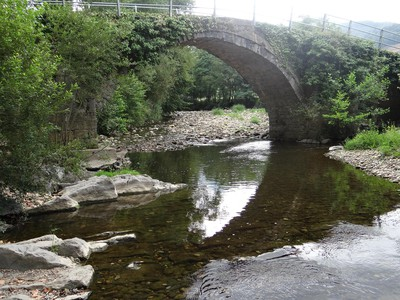
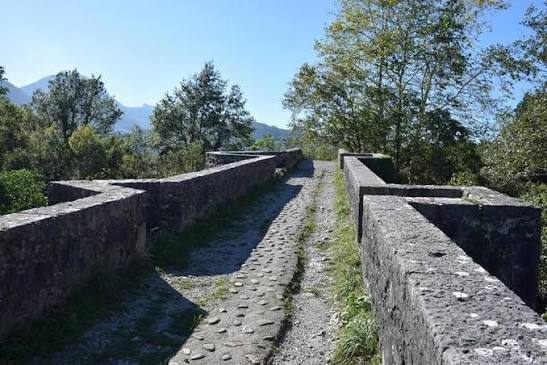
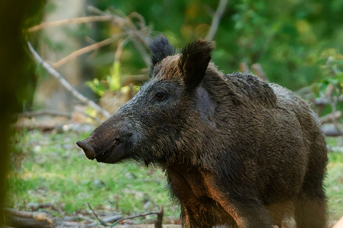
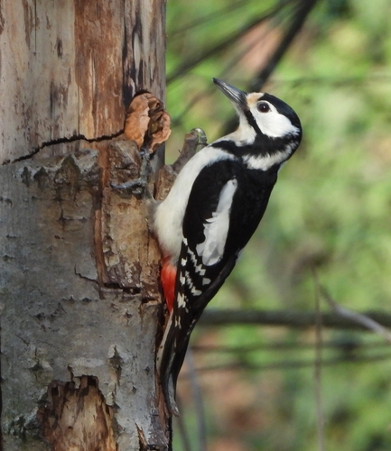
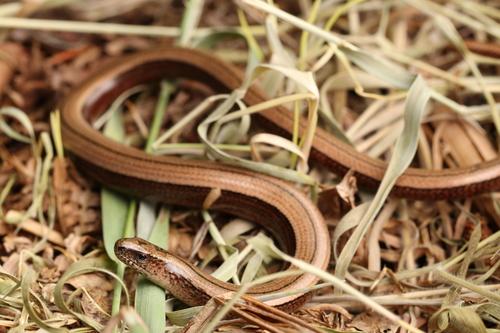
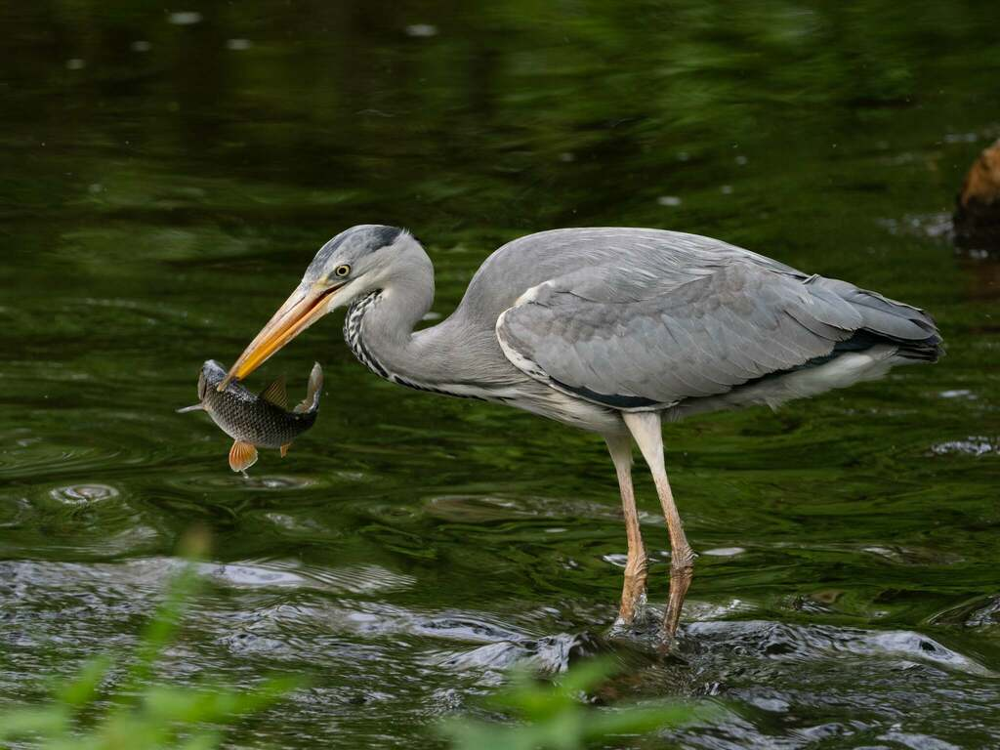
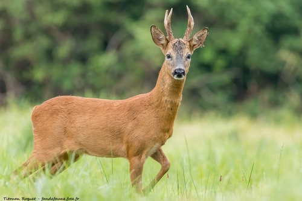

PUNTOS DEL RECORRIDO
Lugares que descubrirás durante la ruta
EL RECORRIDO
Si empezamos el paseo desde el puente de entrada al barrio de Pondra, podemos dejar el coche al lado de la parada de autobús que hay en la carretera que va a Carranza. Cruzamos el puente y atravesamos el barrio hasta llegar a la ermita de San Salvador y cogemos la carretera que pasa por debajo de la misma para recorrer la mies de Nogales, que va desde Pondra hasta el puente de Riancho.
Cruzando dicho puente atravesamos la mies de Riancho, ocupada en parte por el Parque Empresarial Alto Asón, hasta llegar a la ermita de San Juan, desde donde saldremos a la carretera general y, cogiendo a la derecha, volveremos hasta el punto de inicio de la ruta.
Durante todo el camino iremos por la orilla y cruzaremos el río Carranza, uno de los afluentes más importantes del río Asón.
MIESES, RÍO
Y ENCINAR
El Paseo de Riancho-Pondra recorre un paisaje de mieses, el bosque de ribera del río Carranza y el encinar cantábrico de la Peña Gibaja: tres entornos muy diferentes en apenas 3 km.
MIESES Y BOSQUE DE RIBERA
A ambos lados del río Carranza se extienden las mieses: prados de siega y de diente que junto con las huertas forman un paisaje agrario de elevada fertilidad, reducida pendiente y gran productividad. Además de especies silvestres herbáceas, encontramos cultivos como el maíz.
A lo largo del río Carranza se desarrolla un bosque de ribera con disposición en galería, formado principalmente por alisos y sauces. En las laderas de la Peña Gibaja podemos observar el característico encinar cantábrico, que se desarrolla sobre la base caliza del terreno.

VIDA SILVESTRE EN UN PAISAJE HUMANIZADO

Aunque se trata de un paisaje humanizado, en estas zonas también habitan numerosos animales silvestres. Los corzos son frecuentes y pueden observarse al amanecer o al atardecer, junto a otros mamíferos como jabalíes, zorros, tejones, jinetas, comadrejas y ratones.
También es fácil encontrar ánades, garzas, petirrojos, jilgueros, pinzones, lavanderas, arrendajos, urracas y cornejas, además de rapaces como milanos, busardos ratoneros y buitres. Entre la vegetación son habituales lagartos, lagartijas y el lución.

Especie característica de este tramo de la ruta.

El pájaro carpintero más común. Su tamborileo rítmico sobre los troncos es señal inequívoca de su presencia.

Lagarto áptero que se confunde con una serpiente. Completamente inofensivo y beneficioso para el campo.

Ave zancuda de gran porte habitual en las orillas del Asón. Caza peces con paciencia inmóvil.

El mayor mamífero del encinar. Por sus hábitos crepusculares, sus huellas son más fáciles de encontrar que el animal.
ESPECIES EXÓTICAS INVASORAS
A lo largo del recorrido podemos encontrar especies exóticas invasoras que compiten con la flora autóctona y alteran el equilibrio del ecosistema. Su presencia en los márgenes del río y los caminos es un problema creciente.
INFORMACIÓN ÚTIL
 Apta para niños
Apta para niños Calzada compartida
Calzada compartida Apta para bicicletas
Apta para bicicletas Apta para carritos
Apta para carritos¿LISTO PARA CAMINAR?
SEGUIR LA RUTA →